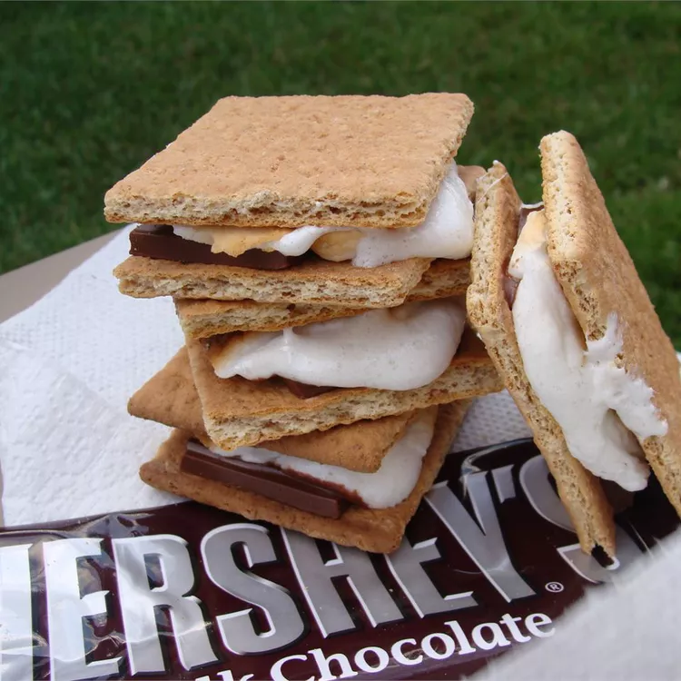

Recipe for making S'Mores

Description
A classic meal for campfires, or any other occasion of your liking.
It is very simple to make all you need is three ingredients and a fire.
Ingredients
- Large graham cracker
- Large marshmellow
- Hershey's chocolate bar
Steps
e
- Make sure a controlled fire is going.
- Split graham cracker into two pieces.
- Put the marshmellow on a stick and cook it in the fire.
- Remove the marshmellow from the fire after it is cooked.
- Put the marshmellow on top of one piece of the graham cracker.
- Then take a piece of the chocolate bar and put it on top of the marshmellow.
- Finally, put the other piece of the graham cracker on top of the chocolate.
- Enjoy your meal.